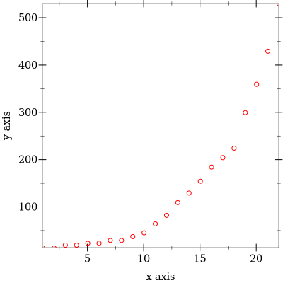
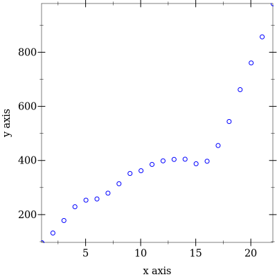
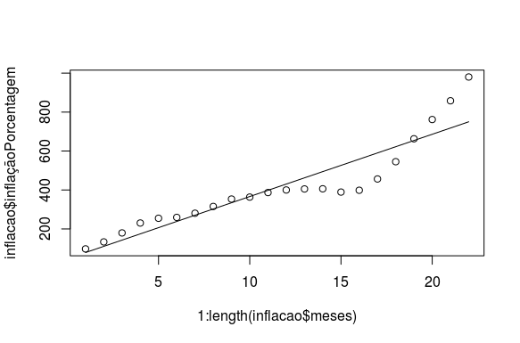

Análise por utilização de regressão Linear da interferência da inflação pós ditadura militar nos quadrinhos da série Tex Coleção
Luan Cenci
Instituto Federal de Educação Ciência e Tecnologia Catarinense - Campus Videira
89560-000 - Videira - SC - Brasil.
lcencicolo@gmail.com,lcencicolo@hotmail.com
Abstract.This article will demonstrate how the inflation of the 80s could have made the prices of products higher. Through the linear regression we will see how the price of the tables went up during that period.
Resumo.Este artigo visa demonstrar como a inflação dos anos oitenta pode ter feito com que os preços dos produtos tivessem aqueles valores enormes. Através de regressão linear veremos como o preço dos quadrinhos subiu durante o período.
Introdução
Nos anos de 1980, começou um movimento político chamado de abertura pelo regime militar que comandava o Brasil, desde os anos de 1964. Em 1985 o comando já havia passado para o então presidente José Sarney. Pós crise do petróleo dos anos 70 e o esfriamento da guerra fria em si, o então governo que era bastante dependente de investimentos estrangeiros durante o período em que se mantiveram no poder viu o seu principal aliado a reduzir rapidamente os empréstimos que fazia ao país. Os militares prevendo a diminuição da guerra fria entre Estados Unidos e União Soviética, iniciou uma abertura lenta no final dos anos 70 culminando com a entrega total para um governo democrático em 1985.
Naquela época a editora Rio Gráfica decidiu lançar uma série de quadrinhos, que tinha como público alvo os fãs da série em quadrinhos da Editora italiana Sergio Bonelli, apesar de depois de a empresa se tornar parte do grupo Globo. A série Tex Coleção é publicada até hoje só que através da Mythos editora. Na época como muitas outras empresas a mesma sofreu os problemas que a inflação do momento em um mercado causava aos produtos recém-fabricados como revistas em quadrinhos.

Figura1. Segunda capa de Tex Coleção.
1.Regressão Linear
Em alguma situações, interessa-nos saber se é possível usar uma das variáveis para predizer o valor de outra. Suponhamos que queiramos avaliar o possível preço de uma revista em quadrinhos. Para os próximos dois meses. É dificil predizer diretamente tal preço.
Em economia, admite-se que a inflação de determinado período pode afetar o preço de produtos vendidos mais a frente.
Ema boa maneira para determinar a influência da inflação sobre um determinado período é montando um gráfico, onde traçaremos no eixo X o período de tempo e sobre o eixo Y a inflação do mesmo tempo que estamos analisando. Este tipo de gráfico é chamado de diagrama de dispersão.
Este gráfico acima representa o preço que as revistas em quadrinhos do Tex tiveram na época, podemos perceber que teve uma grande alta da metade daquele período até o final. Impulsionado por uma inflação que chegou ao final de 1987 passar de 1000% como mostra este outro gráfico.
3.Racket
Muitas linguagens podem ser utilizadas para calcular a regressão linear de um período. Como o R, Python, Scala e Julia. Mas o Racket é uma das linguagens derivadas do Lisp e Scheme. Por ser uma linguegem puramente funcional e possibilitar mais rapidamente a efetuação de cálculos.Linguagens funcional são mais utilizadas para cálculos matemáticos e como este realizados aqui.
(define (sum xs) (reduce + 0 xs))
(define (square x) (* x x))
(define (linear-regression x y)
(let* ([mean_x (/ (sum x) (length x))]
[mean_y (/ (sum y) (length x))]
[numerator (sum (map (λ(xi yi) (* (- xi mean_x) (- yi mean_y))) x y))]
[denominator (sum (map (λ(xi) (square (- xi mean_x))) x))]
[beta (/ numerator denominator)]
[alpha (- mean_y (* beta mean_x))])
(list beta alpha)))
Este código acima apresenta a forma de se calcular uma regressão linear, esta função nos retorna como resultado o Coeficiente angular e o intercepto, que serão usados para fazer a reta regressão que mostrará a tendencia de que os valores calculados por nós irão assumir. Caso a reta de regressão assuma um valor acima de zero, a tendencia é de subida, Se ocorrer o contrário caso a reta de gressão assuma um valor negativo, a tendencia será de queda. Como mostra o gráfico de dispersão abaixo:
Conclusão
Em muitos casos podemos utilizar a regressão linear, mas as formas que mais pode se encaixar nesre trabalho do que a regressão linear simples, pode ser a regressão linear dupla, que podemos calcular mais de uma variável independente, como a inflação e a influencia no preço em sí das revistinha de Tex.
Referencias
Downing, Douglas. Estatística Aplicada. 3 edição, São Paulo: Saraiva, 2011.